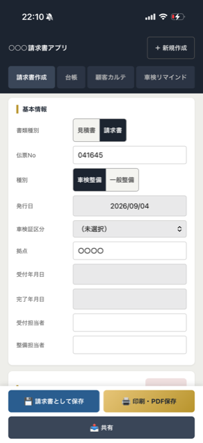
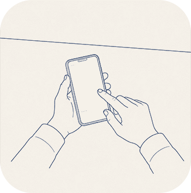
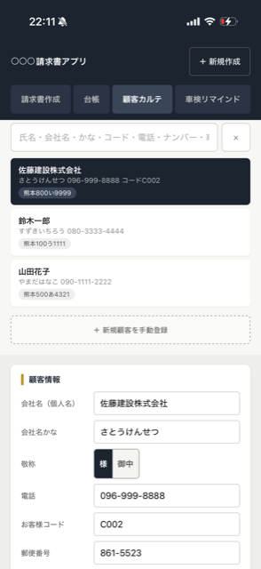
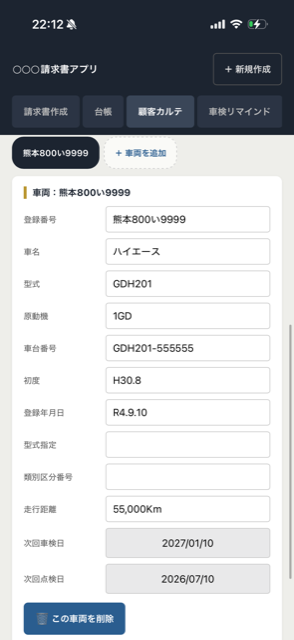
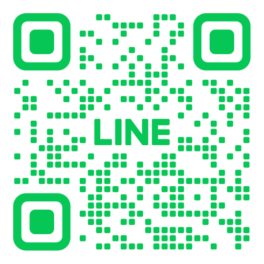

熊本・福岡｜お店に合わせてつくる業務アプリ
その伝票にかかる8分は、
お客様に請求できません。
積み重ねると、まとまった時間になります。
手書きの伝票も、Excelの管理表も、紙のままの台帳も。
「面倒だ」と思っている仕事を、お店に合わせて作りかえます。
（無料・見積もり不要）
ご相談だけでも構いません。
月額課金はありません。

対応
毎日使っています
こんなこと、ありませんか
時間が、そのまま消えています
書き損じるたびに、また1枚。
複写伝票は修正がききません。書き直した1枚も、また8分。積み重ねれば、それだけの時間が消えていきます。
「あの時の請求書」が、すぐに出てこない。
お客様から電話で聞かれて、ファイルを遡ってしばらく探すことに。待たせている間、他の仕事は止まっています。
気づかないうちに、損をしています
この書き方で合っているのか、毎回自信がない。
案内の一手間が続かず、次の1台が他所に流れる。
あなたの作業、こう変わります
これまで
いまは
書く、計算、また書くの繰り返し

項目を選んだら、計算は自動
計算も、書き直しも、もう要りません。
3rd Stageができること
① 書類を、そのままの形でつくれます。
見積書・請求書・領収書・納品書。今お使いの伝票と同じ書式で作れます。
② お客様と車両を、あとから探せます。
お名前でも、ナンバーでも、電話番号でも。


③ 伝票に限りません。お店の「面倒」に合わせて作ります。
予約の受付表、作業の記録、お店のホームページ。「これも何とかならないか」と思っていることがあれば、まずお聞かせください。
導入していただいています
熊本県内・整備工場A様
これまで
複写伝票に手書き。控えはファイルに綴じて保管。
いまは
選ぶだけで1枚できあがり。過去の分もお名前で探せます。
LINEが開きます。
つくったもの
ケンズ請求書アプリ
整備工場向け 見積・請求
業務アプリミエルカ
売上管理・分析
業務アプリSKZK診断
診断コンテンツサイト
サイト制作ガチャグイッ!!
飲みげーアプリ
アプリ（iOS）選ばれている理由
① 買い切りです。月額課金はありません。
一度お作りしたものは、そのままお使いいただけます。
② ネットがつながらなくても動きます。
工場の奥でも、いつもどおり使えます。
③ 買う前に、実物を触っていただけます。
ご説明に伺うとき、実際に動くものをお持ちします。
④ 熊本・福岡へ、顔を出して伺います。
電話の向こうの窓口ではなく、担当が直接。
⑤ このサイトも、自社で作りました。
いまご覧のこのページも、私たちが作っています。
ご相談から、お届けまで
LINEでご相談
「今こんな風にやっている」を教えてください。
お店に伺います
今お使いの伝票を見せてください。
お見積り
何をどこまで作るか、金額と一緒にお出しします。
お作りして、お届け
その場で一緒に触ってみます。
使い始めてから
「ここを変えたい」もご相談ください。
料金について
お店によって、必要なものが違います。そのため、決まった価格表はご用意していません。お話を伺ってから、金額をお出しします。 ひとつだけ決まっているのは、買い切りだということです。毎月のお支払いは、ありません。
よくあるご質問
Qパソコンが苦手でも使えますか。
スマホで写真を撮ったり、LINEを送ったりできれば大丈夫です。文字を打つ場面はできるだけ少なくして、選ぶだけで済むように作ります。
Qインターネットがない工場でも動きますか。
動きます。通信を使わずに、端末の中だけで動くように作っています。電波が入らない場所でも、いつもどおりお使いいただけます。
Qデータが消えたりしませんか。
端末の中に保存する仕組みのため、端末を初期化したり、ブラウザのデータを消してしまうと、記録も一緒に消えます。そのため、データを書き出して保存しておく機能を必ずお付けしています。定期的な書き出しのやり方も、納品時にご説明します。
Q月額はかかりますか。
かかりません。買い切りです。一度お作りしたものは、その後お支払いなしでお使いいただけます。
Q今使っている伝票と同じ書式にできますか。
できます。今お使いの伝票を見せていただいて、同じ見た目になるようにお作りします。お客様に渡す書類の見た目が変わらないので、お客様が戸惑うこともありません。
Qまず話を聞くだけでもいいですか。
もちろんです。お見積りをお出しした段階でお断りいただいても構いません。その後にこちらからしつこくご連絡することはありません。
つくっているのは、この人たち
社長 兼 開発担当
西村憧平（にしむら しょうへい）
「使う人が説明書を読まなくていいものを作ります。分からないところは、作り直します。」
福岡エリア担当
福田雄翔（ふくだ ゆうと）
「福岡でお困りのお店に、直接お伺いします。」
まずは、今のやり方を教えてください。
何を作るか決まっていなくても構いません。「手書きでやっている」「Excelで作っている」。その一言からで大丈夫です。
LINEで相談する「今こんな風にやっています」の一言からで大丈夫です。

スマホで読み取ってご相談ください。
LINEの友だち追加画面が開きます。